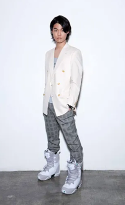
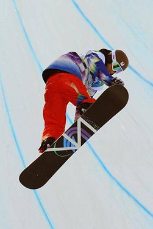
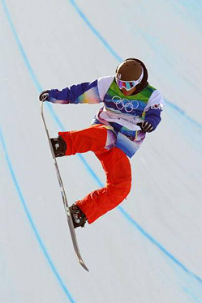
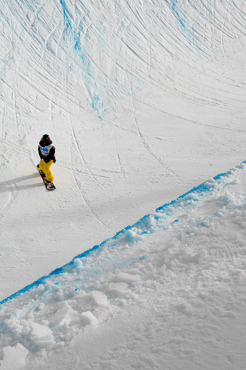

Kim
Ho-Jun
Ich bin ein ehemaliger südkoreanischer Snowboarder. Während meiner aktiven Karriere war ich auf die Disziplin Halfpipe spezialisiert. Ich hatte die Ehre, an drei Olympischen Winterspielen sowie an fünf Snowboard-Weltmeisterschaften teilzunehmen.
Erstes internationales Rennen
bei den Junioren-WM, Platz 10
Weltcup-Debüt
Platz 19
Silbermedaille bei der
Winter-Universiade (Halfpipe)
Olympische Winterspiele
Vancouver – 26. Platz
Olympische Winterspiele
Sotschi – 28. Platz
Südkoreanischer Meister
in Halfpipe
Fünfter bei den
Winter-Asienspielen
Letzter Weltcup-Start
und Karriereende
Olympische Spiele
Die Olympischen Winterspiele waren für mich immer ein besonderes Ziel und ein Höhepunkt meiner sportlichen Laufbahn. Dreimal durfte ich Südkorea auf der grössten Bühne des Wintersports vertreten und mich mit den besten Halfpipe-Fahrern der Welt messen. Jede Teilnahme war eine wertvolle Erfahrung und ein bedeutender Moment meiner Karriere.
Disziplin Halfpipe
Die Olympischen Winterspiele in Südkorea sowie beste olympische Platzierung und ein besonderer Moment meiner Karriere.


Weltmeister-
schaften
Auch bei den Weltmeisterschaften durfte ich mein Land mehrfach vertreten und mich regelmäßig mit der internationalen Konkurrenz messen. Diese Wettbewerbe waren für mich eine wichtige Standortbestimmung und haben meine Entwicklung als Halfpipe-Athlet maßgeblich geprägt. Jede Teilnahme bedeutete neue Erfahrungen, Herausforderungen und die Chance, mich auf höchstem Niveau weiterzuentwickeln.
